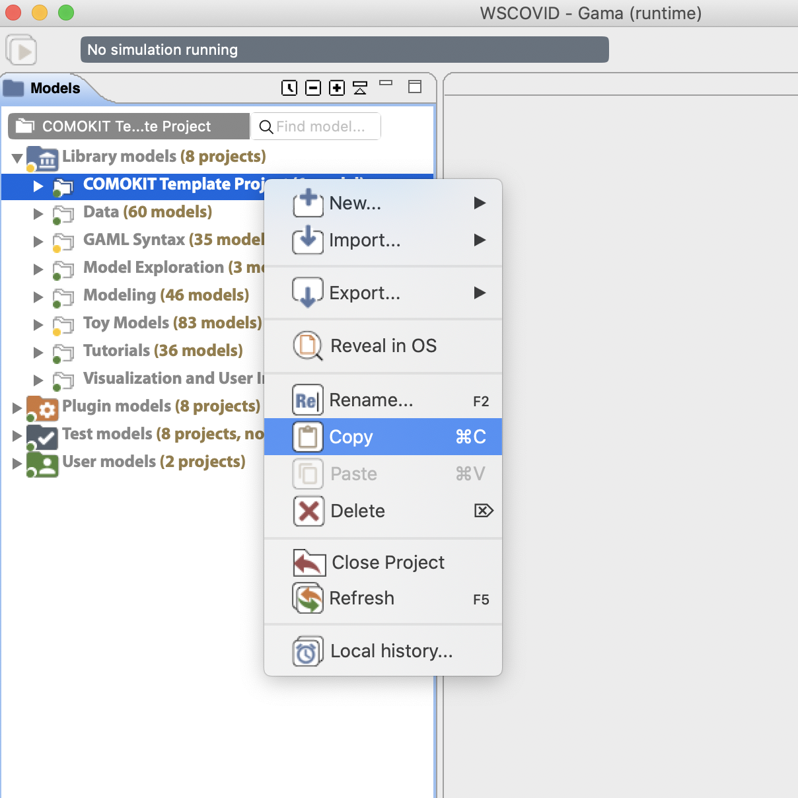
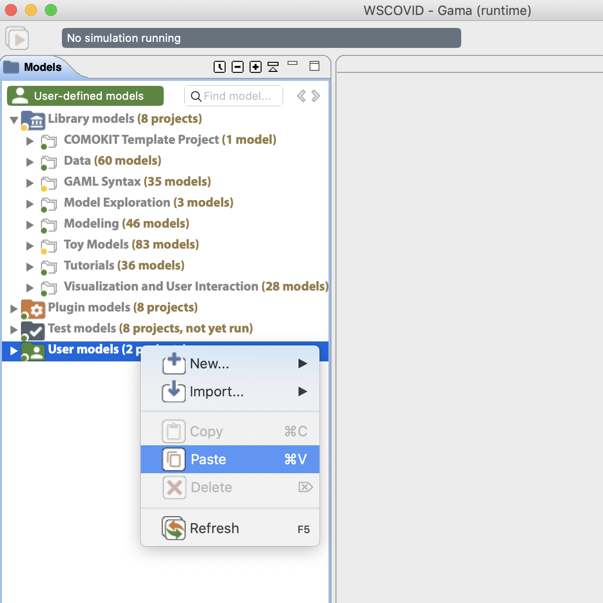
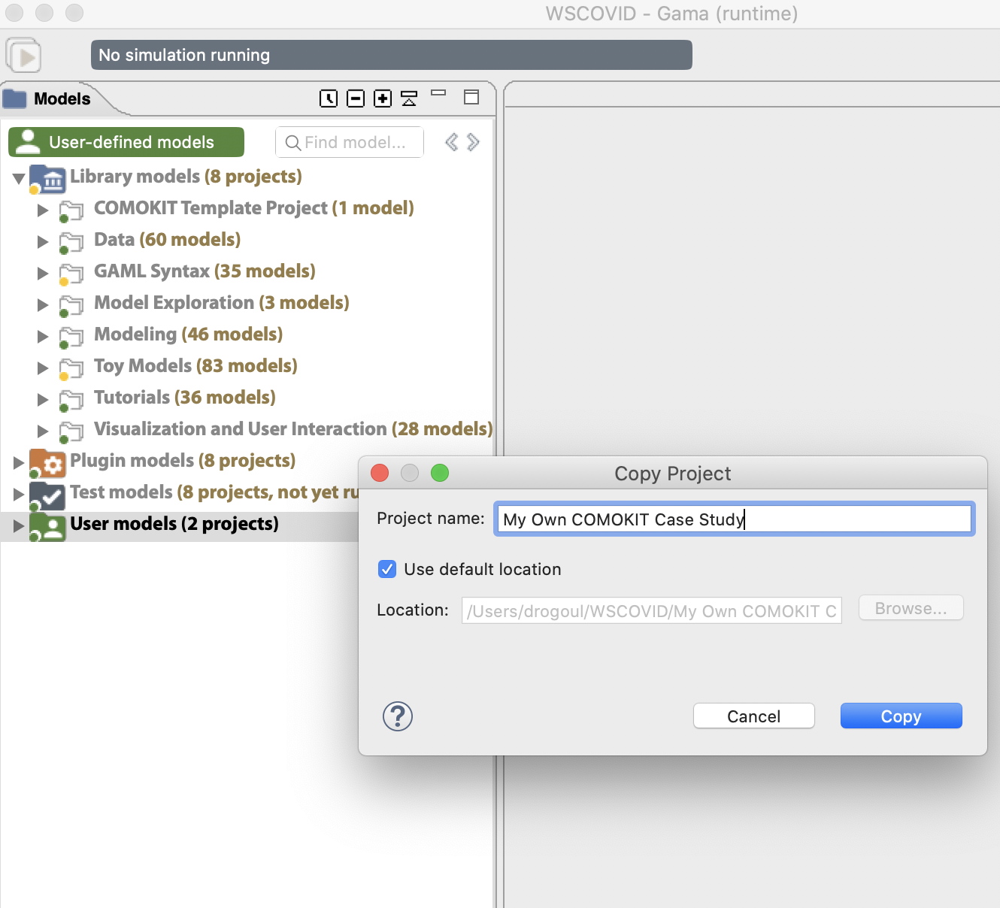
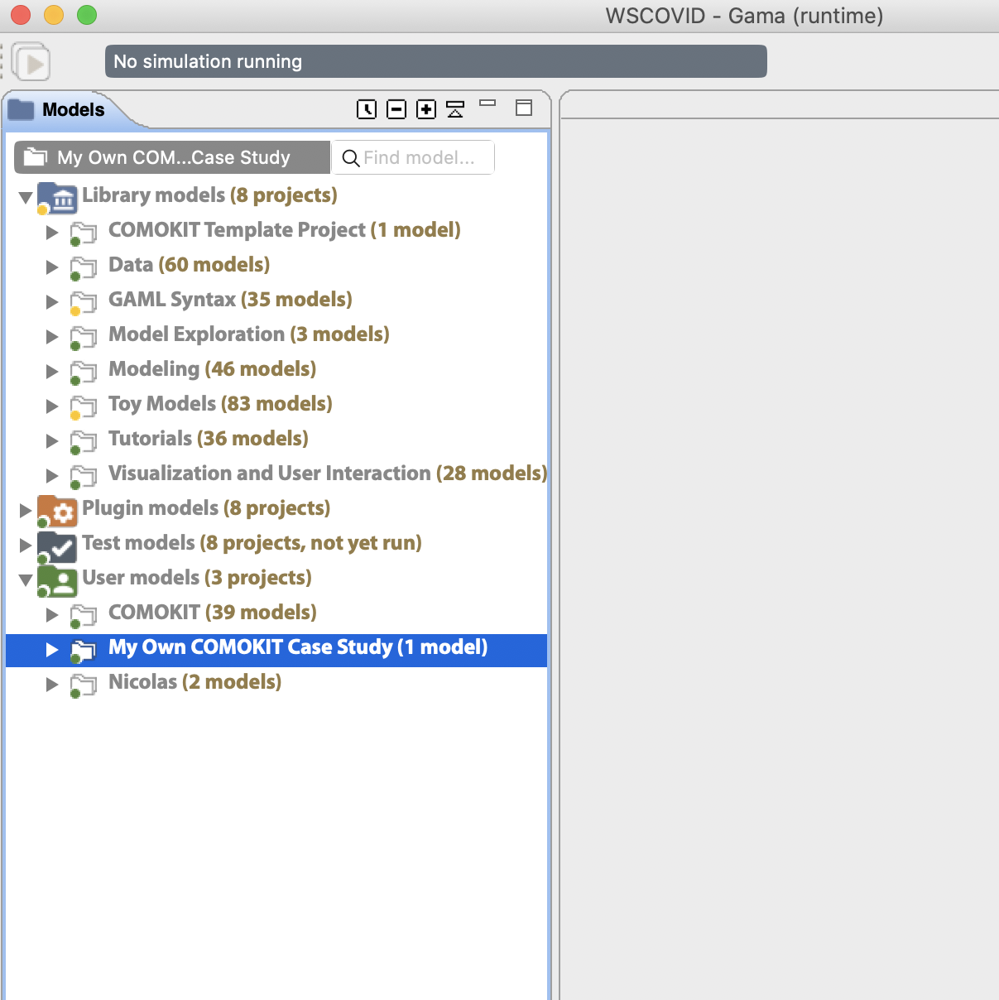
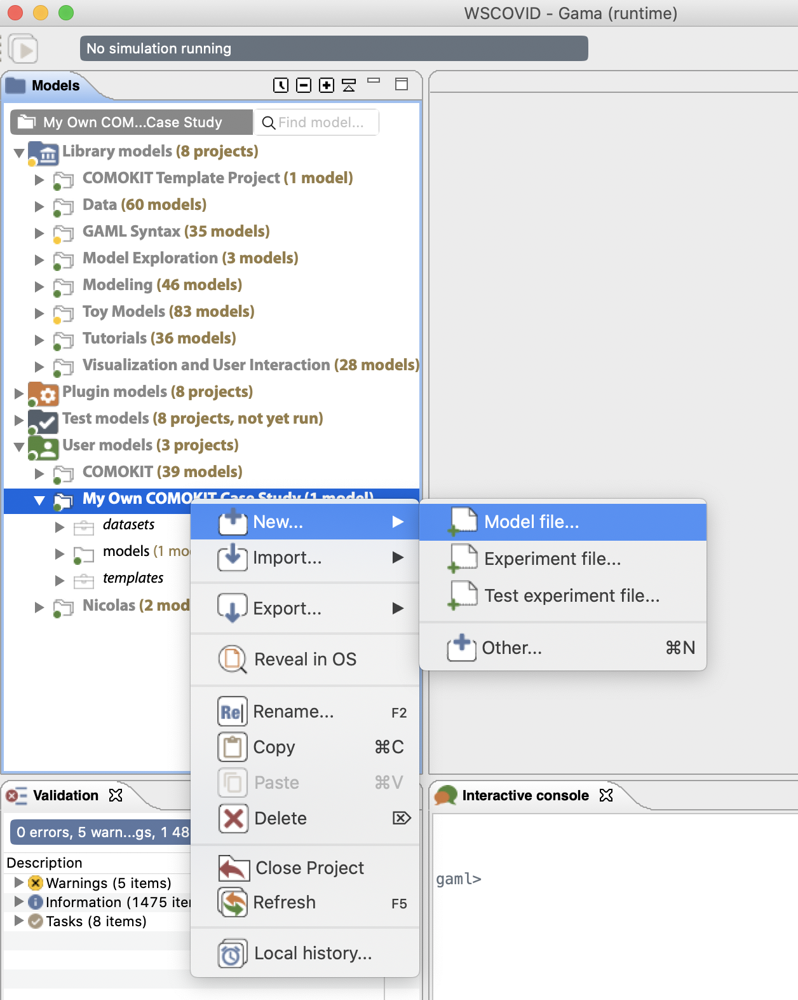
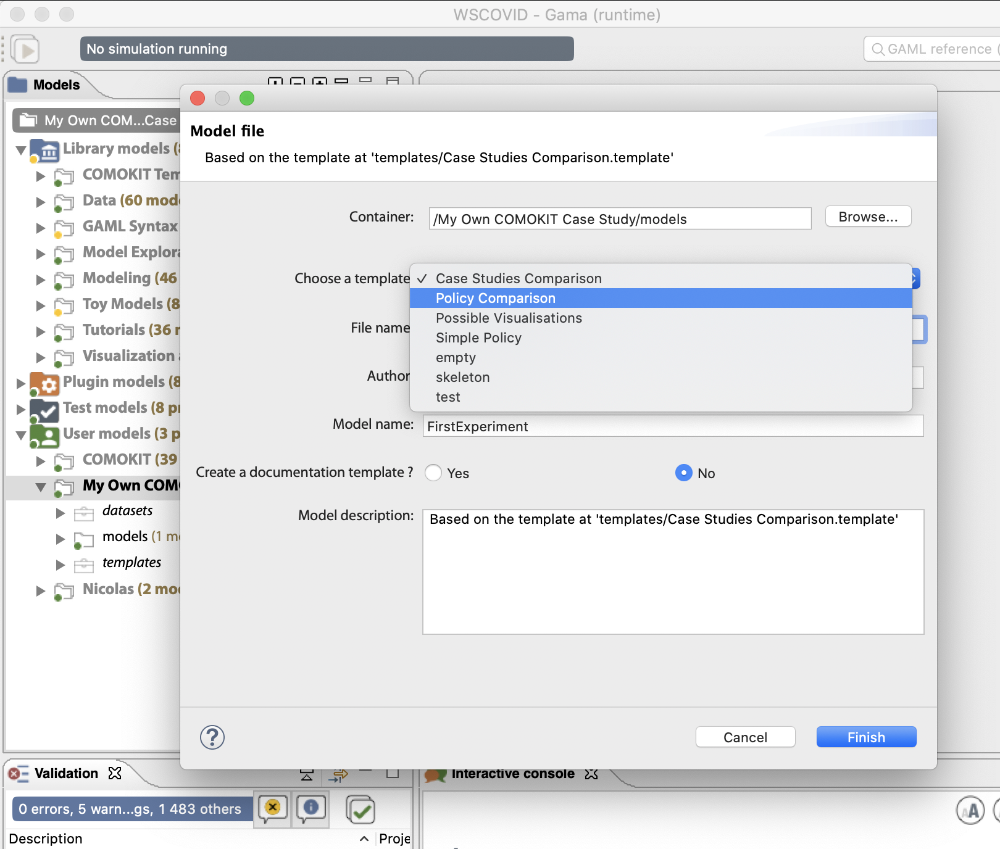
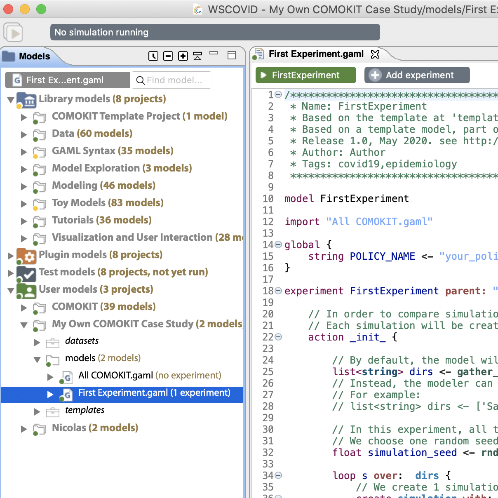

Applying COMOKIT
How to apply COMOKIT to your own dataset
Table of contents
- Introduction
- Duplicate the
COMOKIT Template Projectin your workspace - Create a new case study
- Create a new experiment
Introduction
This section describes the simplest way to use COMOKIT to explore the impact of control policies in a given case study (a case study defined by its geographical location and boundaries, possibly GIS data on the built environment, and possibly population data). GAMA (with COMOKIT) must of course be already installed and running. If it is not the case, please refer to the Getting Started documentation page
Duplicate the COMOKIT Template Project in your workspace
When defining a new case study, the easiest way to proceed is to create a new project, which contains the specific model files (extensions of the base model, new experiments, etc.), the datasets containing the different input data of the case study and other assets related to the case study.
COMOKIT provides a defaut template (i.e. not functional per se) project that defines the basic layout of a COMOKIT project and provides templates to build new experiments.
The first step is to duplicate (and rename) this template project so that it becomes a new project in the User models section of the workspace.
Locate it first (either in the Library models or in the User models depending on your installation of COMOKIT):

Copy the whole project:

Paste it into User models:

Verify it is correctly placed:

Create a new case study
In order to declare or apply an experiment to a new case study, COMOKIT requires a minimal dataset that should be, at least, composed of:
Spatial data:
boundary.shp [Required]: this file should contain the boundary of the case study. It is the only file absolutely required to define a new case study. More information about shapefiles and repositories are available here or using the DIVA repsitory. Videos showing how to download Shapefiles for a particular area are also available here and here.
buildings.shp [Optional]: this file should contain the buildings of the case study. Buildings are in COMOKIT the places where Individuals’ activities are held. The shapefile attributes table should contain a column named
typecontaining the type of the building according to the OSM specifications. If buildings are not available for the case study, COMOKIT proposes a model (inCOMOKIT/Utilities/Generate GIS Data.gaml) that requests OSM servers with respect to the area defined inboundary.shpand attempts to build thebuildings.shpfile automatically. This short video will guide you through this process:
You can find examples of complete datasets in the default datasets folder included in COMOKIT (folder COMOKIT/Datasets in your workspace) or in the additional datasets repository.
Demographic data:
population.csv [Optional]: a file that contains individuals with some basic attributes, i.e. age, gender, employement status and household identifier. If this file is not present, the population will be generated based on the buildings available.
satellite.png and satellite.pgw [Optional]: if modelers want to add a georeferenced background image (e.g. from GoogleMap).
Parameters:
The parameters of the different sub-models can all be specified, either in the GAML code of the new experiment or in their own configuration files. See how to do it on this page.
Create a new experiment
In the new project created after the template, choose to create a new model file. GAMA will detect the templates present in your project and propose to use one of them as the basis of the new experiment.
Create a new model file (not – yet – a new experiment file: model files are more flexible):

Several templates (corresponding to the ones present in (Your Project/templates) are proposed in addition to the basic ones:

The new model is automatically placed in the models subfolder. If the dataset is correctly created and located, the experiment it defines can be run immediately.
